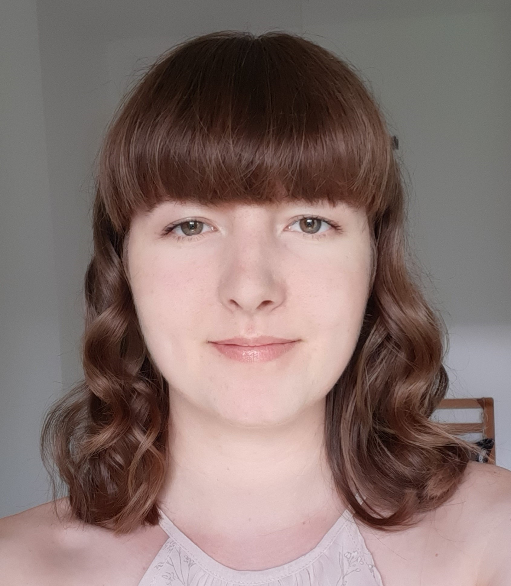

Hi everyone, nice to digitally meet you! My name is Frantiska (she/her), I am 23 years old and I come from Czech Republic. I completed my Bachelor's degree in English Language and Culture at the University of Amsterdam, including an Erasmus year abroad at the University of Edinburgh which I have just returned from.
Recently, I have been reading a lot of non-fiction (which my childhood self would be so disappointed by)! I am most interested in travel/mountaineer literature, and some of my favourites include Into The Wild by Jon Krakauer, The Living Mountain by Nan Shepherd, and My First Summer in the Sierra by John Muir. Other than that, I love some good sci-fi, most notably The Long Way to a Small Angry Planet by Becky Chambers. This is also reflected in my favourite film of all time being Interstellar (2014). If any of this catches your eye, please feel free to come up and chat about it!:)
| Prior Knowledge | Through studying linguistics, I had a try at coding and statistical analysis using the programming language R, but that's about it - all the software from this course is new to me |
|---|---|
| Expectations | To not find technology so scary!! I'm hoping to just learn these programming languages step-by-step, and gain practical skills that can be useful in the future |